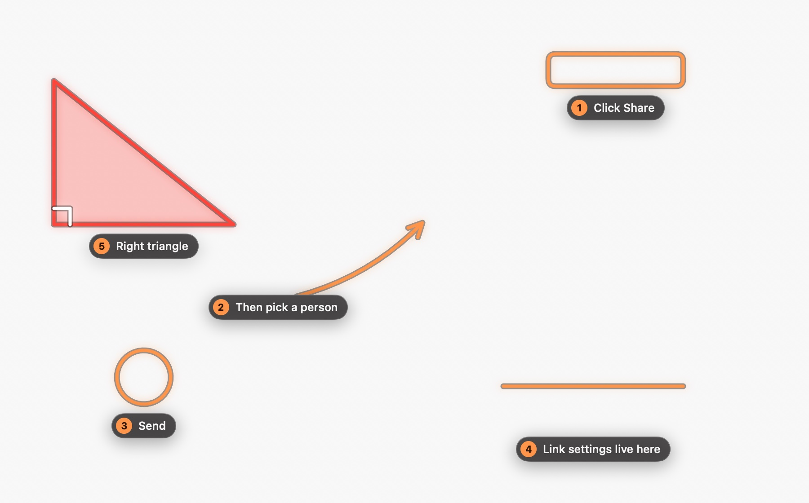
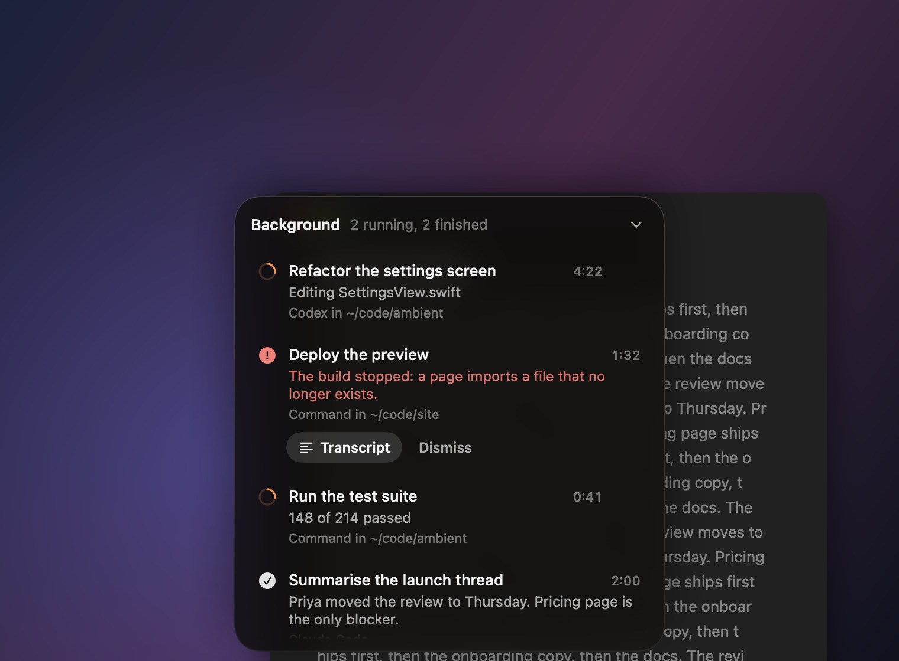
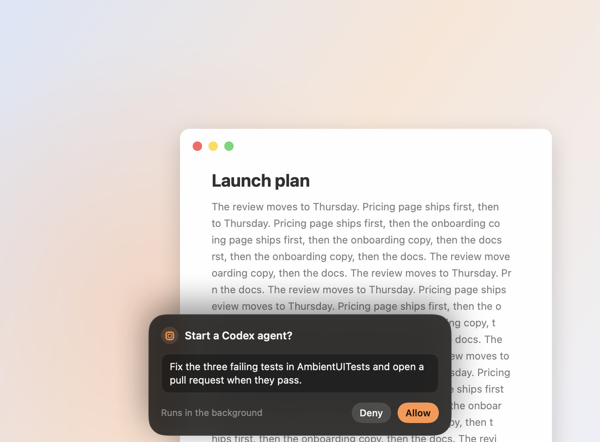

Hold two keys.
Just ask.
Ambient is a voice assistant that lives in a small bar at the edge of your screen. It answers out loud, points at things on your screen, and hands longer jobs to agents that work in the background.
On your phone?Send it to your computer.
Launch plan
The review moves to Thursday. Pricing page ships first, then the onboarding copy, then the docs.
Priya owns the announcement. Send her the final screenshots by Wednesday noon.
Open questions: do we keep the waitlist, and who answers support the first week?
A little bar.
Room for everything else.
Ambient never opens a window to talk to you. Speak, let go, and the answer arrives where you already are, spoken as it is written.

On your screen
It shows you, not just tells you.
Ask where something is or how to do it. Ambient looks at your screen, then circles, points and draws numbered steps right on top of it. Drawings stay until you clear them.

Hand off the long jobs.
Say “start an agent” and it runs headless while you keep working: research, a refactor, a test run. Use Ambient's own agent, or Codex and Claude Code if you have them.

It asks first.
Anything that runs on your machine waits for your Allow.
Also in the box
- Docks to any edge
- Drag the bar to the top, bottom or either side. It remembers where you left it.
- Remembers what matters
- It learns as you use it, and you can read, edit or delete everything it knows.
- Skills you can write
- A skill is a plain
SKILL.mdfolder. Drop in your own. - A tour on your real desktop
- First launch teaches each part with the real bar, not a slideshow.
- Updates itself
- New versions download in the background and ask before relaunching.
Download
Get Ambient.
Free to download. On first launch you sign in with publik, which provides the AI, speech and search.
These install on a computer, not a phone.
Email me the linkMac
- Open
Ambient-macos.dmgand drag Ambient into Applications. - Launch it and sign in with publik.
- Allow the microphone, Accessibility (for the shortcut) and Screen Recording. Then hold control + option.
Windows
> irm https://raw.githubusercontent.com/jibberswrld/ambient/main/windows/install.ps1 | iex
Paste it into PowerShell and press Enter. It downloads the newest installer, installs Ambient and opens it, with no SmartScreen prompt. Windows Defender still scans it as usual. Then hold Ctrl + Alt.
Prefer a normal installer? The installer isn't code-signed yet, so SmartScreen will warn. Choose More info → Run anyway.
Privacy
Quiet by default.
- 1
Your screen stays yours.
Nothing on screen is captured unless your request needs it, and captures leave out Ambient's own windows.
- 2
Speech is recognised on the Mac when it can be.
Apple's on-device recognizer handles most recordings, and the audio file is deleted when the turn ends.
- 3
Memory is files you can read.
What Ambient learns lives as plain files on your computer. Open them, edit them, delete them.
- 4
The code is public.
Ambient is MIT licensed. Read every line on GitHub.